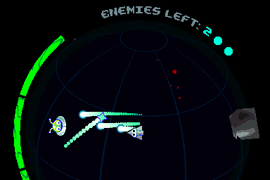
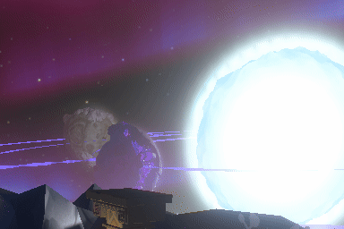
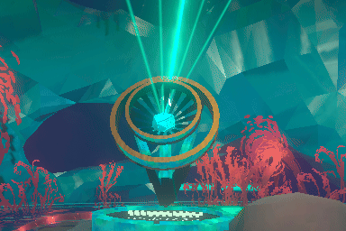

Game Jam Games
Glorbule

A wave shooter on a sphere - Submission to GMTK 2025
I programmed gameplay, made shaders and music, and made the audio and effects.
Collaborated with Autocorrect and YakiYuki
Itch.ioSG-4

An endless digging game - Submission to Ludum Dare 57
I made the music, audio, and effects.
Collaborated with Autocorrect and YakiYuki
Ludum DareThe Crumbly Fumbly

A first-person platformer on crumbling islands - Submission to Ludum Dare 51
I programmed gameplay and made shaders and music.
Collaborated with Nolram
Ludum DareOuter Wilds Mods
Heliostudy

A jam mod about exploring a Nomaian educational project
I was the main 3D and 2D artist and made some music and audio.
Collaborated with 2Walker2, coderCleric, and JohnCorby
Mod Page Soundtrack (spotify)Astral Codec

A story mod by 2Walker2 about the origin of The Interloper
I was the main 3D artist and made some music.
Collaborated with 2Walker2 and JohnCorby
Mod Page Soundtrack (yt)Outer Wilds Mods
Heliostudy
A jam mod about exploring a Nomaian educational project
I was the main 3D and 2D artist and made some music and audio.
Collaborated with 2Walker2, coderCleric, and JohnCorby
Mod Page Soundtrack (spotify)Astral Codec
A story mod by 2Walker2 about the origin of The Interloper
I was the main 3D artist and made some music.
Collaborated with 2Walker2 and JohnCorby
Mod Page Soundtrack (yt)